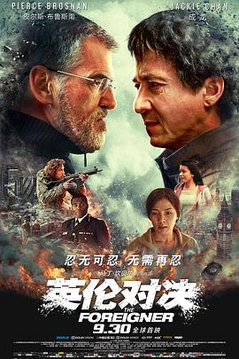
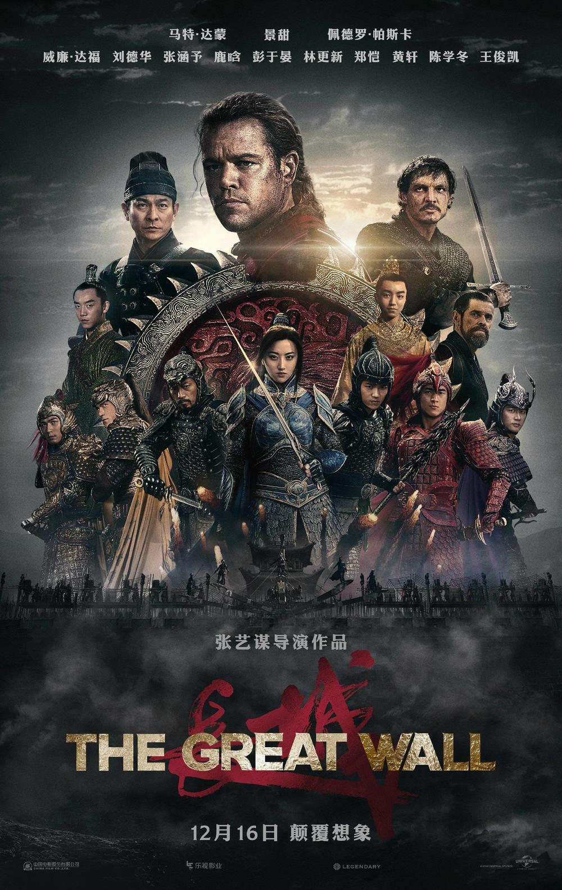
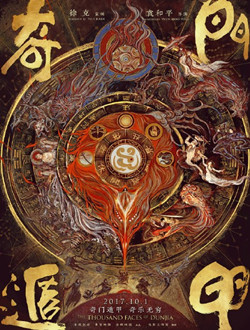

|  |
简 介：英国唐人街小餐馆老板关玉明（成龙饰）的女儿（梁佩诗饰）在恐怖袭击中不幸遇难，而有关部门的不作为更使他悲愤莫名。为给女儿讨回一个公道，他拒绝了林宝怡（刘涛饰）的挽留，独自踏上向恐怖组织以牙还牙以血还血的复仇之路。此时，关键人物汉尼斯（皮尔斯-布鲁斯南饰）的出现，揭开了一个错综复杂的大阴谋。 橘子网评分： |
简 介：故事发生在非洲附近的大海上，主人公冷锋（吴京 饰）遭遇人生滑铁卢，被“开除军籍”，本想漂泊一生的他，正当他打算这么做的时候，一场突如其来的意外打破了他的计划，突然被卷入了一场非洲国家叛乱，本可以安全撤离，却因无法忘记曾经为军人的使命，孤身犯险冲回沦陷区，带领身陷屠杀中的同胞和难民，展开生死逃亡。随着斗争的持续，体内的狼性逐渐复苏，最终孤身闯入战乱区域，为同胞而战斗。 橘子网评分： |
|  |
简介：欧洲雇佣兵威廉（马特•达蒙 Matt Damon 饰）在被囚禁长城期间，发现了这一世间最大奇迹之一背后的惊人秘密。当一波又一波可怕的掠食生物将这座巨型城墙重重围困之时，威廉对财富的追寻演变为一段通往英雄主义的旅程——他加入了一支由精英勇士们组成的大军，共同对抗令人无法想象的强大力量。 橘子网评分： |
|  |
简介：《奇门遁甲》这部影片是由电影工作室有限公司、北京集智映像影视文化有限公司、北京金辉映画影视制作有限公司联合出品，导演袁和平执导，徐克担任监制，大鹏、倪妮、李治廷、周冬雨、伍佰、柳岩主演领衔主演，预计于2017年12月15日上映。据悉，1982年袁和平曾拍过同名电影《奇门武侠》，这与上一次相比，除了片名一样，其他的都是全新的，是一部“另类武侠”，这次将会带给我们不一样的奇幻视觉。 橘子网评分： |